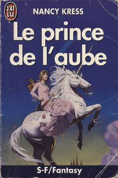

Le prince de l'aube
A Fantasy book. A good first novel with an excellent purple dog.
Download or read Le prince de l'aube in PDF formats. You may also find other subjects related with Le prince de l'aube.
- Filetype: PDF
- Pages: 313 pages
- ISBN: / 2277231665
BJeke_xW0iOZ.pdf
More About Le prince de l'aube
The unusual path of the quest was great, and very timely for me to reflect on. A good first novel with an excellent purple dog. I dearly love Nancy Kresss novels (if you havent read Beggars in Spain RUN and get a copy-RIGHT NOW!), and I really, really wanted to love this - but I just couldnt finish. It seemed like she was trying too hard to be witty - at times it reminded me of The Phantom Tollbooth. But, unfortunately, I found myself not really caring about...